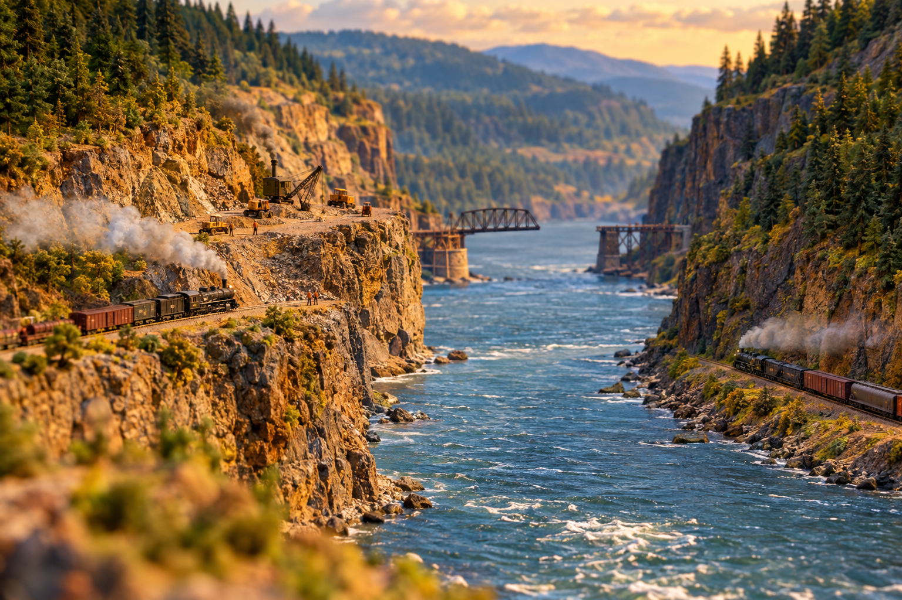

The Columbia River Gorge: One River, Two Railroads, Two Titans

Come stand with me a minute where the big river cuts clean through the mountains. The Cascades run north and south like a wall the whole length of this country, snow on top of them most of the year and timber so thick a man could get lost inside a mile of it. There is only the one place that wall lies down and lets you pass at the level of the water, and that is the Columbia River Gorge. Every other way over those mountains you have to climb, and climbing is where trains go to die, as I've told you before. But the Gorge asks nothing of a locomotive but that it roll. That is why two of the richest men who ever bought a railroad went to war over it.
The Only Door in the Wall
You have to understand what that Gorge was worth. A water-level grade, they call it, meaning the track barely rises the whole way from the dry country in the east down to Portland on the coast. No switchbacks like the Great Northern suffered up at Stevens Pass. No eight-mile tunnel bored through granite to save the passengers from the snow. Just a low, easy shelf of rock along the river where a heavy freight could move a mountain of wheat or timber for pennies. There was no second door like it anywhere in the Cascades. Whoever held the Gorge held the cheapest road to the sea.
For a long while that road belonged to Edward H. Harriman. His people ran the Oregon Railroad & Navigation Company along the south bank, the Oregon side, and behind that little company stood the Union Pacific and the Southern Pacific, which is to say Harriman held the whole southwest corner of the map in one fist. If James J. Hill wanted to bring his trains down to Portland from the east, he had to come begging onto Harriman's rails and pay Harriman's toll. And Hill was not a begging man.
Hill Wanted His Own Iron
In the summer of 1905, at the big Lewis and Clark exposition in Portland, Hill stood up and let the cat out. He announced he would build his own line down the north bank of the Columbia, the Washington side, the one bank nobody had bothered to claim. He had quietly incorporated a company to do it, a thing owned fifty-fifty by his Great Northern and his Northern Pacific and named, in time, the Spokane, Portland & Seattle. Folks along the river just called it the North Bank Road.
Harriman had the south bank and thought that was the end of it. Hill looked across the water at the empty north shore and saw the one thing a man like that cannot abide: a door he did not own.
It was the same feud, you understand, that would soon go up the Deschutes with dynamite and rifle fire a few years on. Hill and Harriman were the two titans of their age, and they did not fight with words. They fought with graders and steam shovels and rock. The Gorge was where that war ran quiet and cold, two crews on two banks of one river, each man building fast so the other could not fence him out.
Two Banks, One River
They started tearing at the north bank in the fall of 1905 and drove it hard, about two hundred and twenty-nine miles from Pasco down to Vancouver, blasting shelves out of the basalt and filling the low ground with rock. It was mean work but it was fast. The crews coming from the east and the crews coming from the west shook hands at Lyle in the last week of February 1908, and on the eleventh of March they drove the ceremonial spike near North Bonneville and called the road finished.
Then Hill did the thing that must have galled his rival most. Late that same year his men threw the first railroad bridge ever built across the lower Columbia, tying the Washington rails to Portland on the Oregon side. On the fifth of November 1908, Hill himself rode a train across that new span. He no longer needed Harriman's tracks, nor Harriman's leave, nor Harriman's toll. He had bought his own way to the sea, on his own iron, along a bank his rival had been fool enough to leave lying open.
What the River Kept
So now the Gorge carried a railroad on each side of the water, and it carries them yet. If you drive that stretch today you can watch a long freight rolling the Washington bank and, across the river, another one answering it on the Oregon side, the two of them running the same low easy grade that made the whole quarrel worth having. Both lines wear different names now than they did, the way old railroads do. But the arrangement is Hill and Harriman's arrangement still, set down in rock and never undone: one river, two railroads, and a pair of dead titans who could not stand to share a door.
What Really Happened
The Columbia River Gorge is the only near-sea-level passage through the Cascade Range, which made it the most valuable rail corridor in the Pacific Northwest. The south (Oregon) bank was held first by the Oregon Railroad & Navigation Company, controlled by E.H. Harriman's Union Pacific / Southern Pacific interests. To gain an independent route to Portland, James J. Hill (through his Great Northern and Northern Pacific) backed the Spokane, Portland & Seattle Railway, incorporated in 1905 and nicknamed the "North Bank Road," along the previously unbuilt Washington bank.
Hill announced the project at Portland's 1905 Lewis & Clark Centennial Exposition. The roughly 229-mile north-bank line (Pasco to Vancouver) was built in about 29 months; east and west crews met at Lyle, Washington, on February 22, 1908, and a ceremonial "golden spike" was driven March 11, 1908, near North Bonneville. The SP&S also built the first railroad bridge across the lower Columbia; Hill crossed it on November 5, 1908, completing an independent route to Portland. Both banks of the Gorge remain busy freight lines today. The lantern-keeper's frontier voice above is storytelling; the companies, dates, and outcomes are drawn from the historical record.